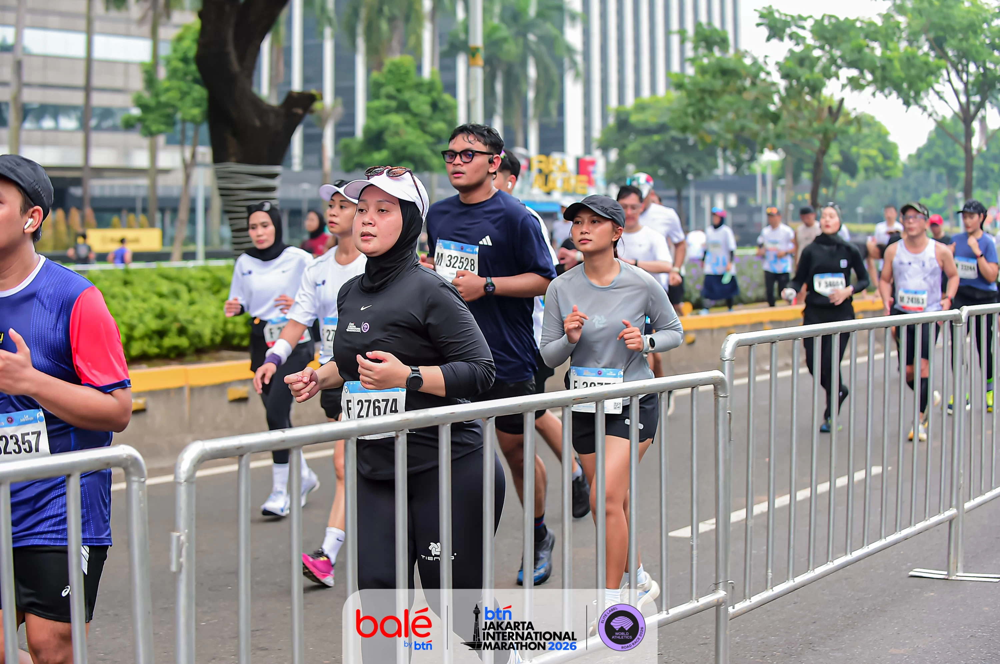

Farewell Night · PRJ 25 Juni
ForLuhim🥀
Sedikit kenangan dari orang-orang yang pernah main, ketawa, dan tumbuh bareng kamu.
ONE LAST MEMORY
25 Juni 2026
📍 Jakarta Fair (PRJ)
🕒 Farewell Luhim
00Hari
00Jam
00Menit
00Detik
Sampai saat itu tiba, mari kita buat satu kenangan terakhir yang layak untuk diingat.